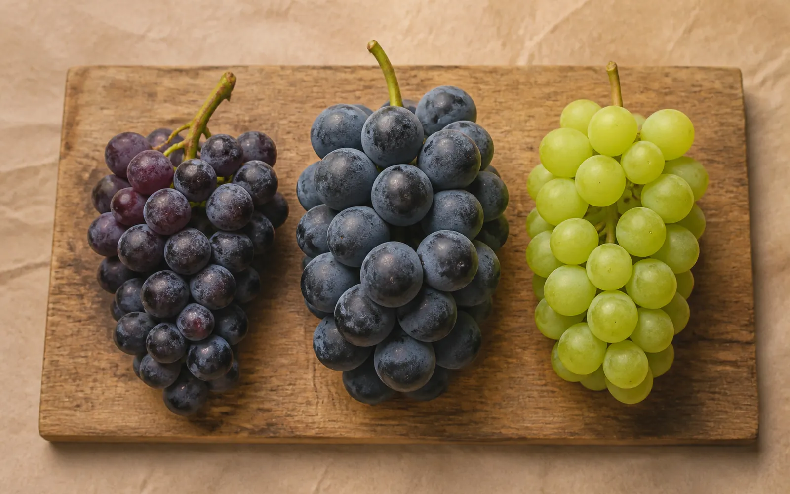
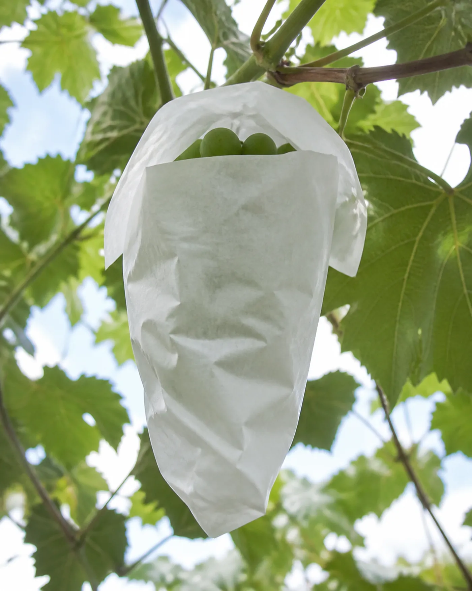
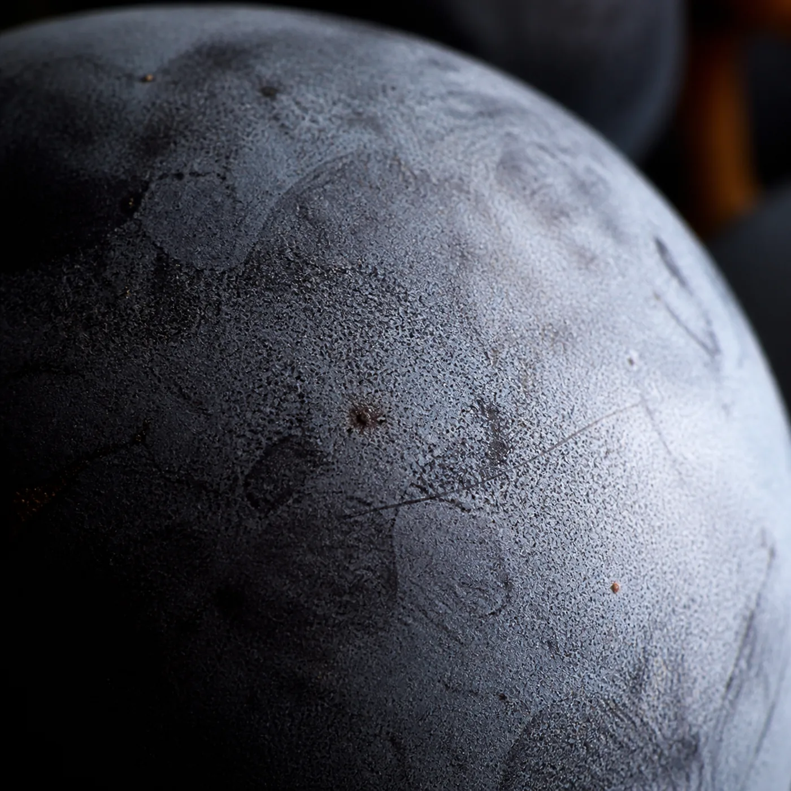
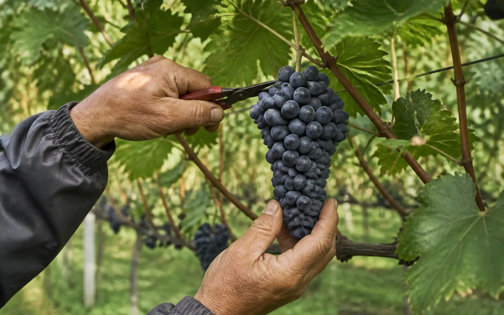
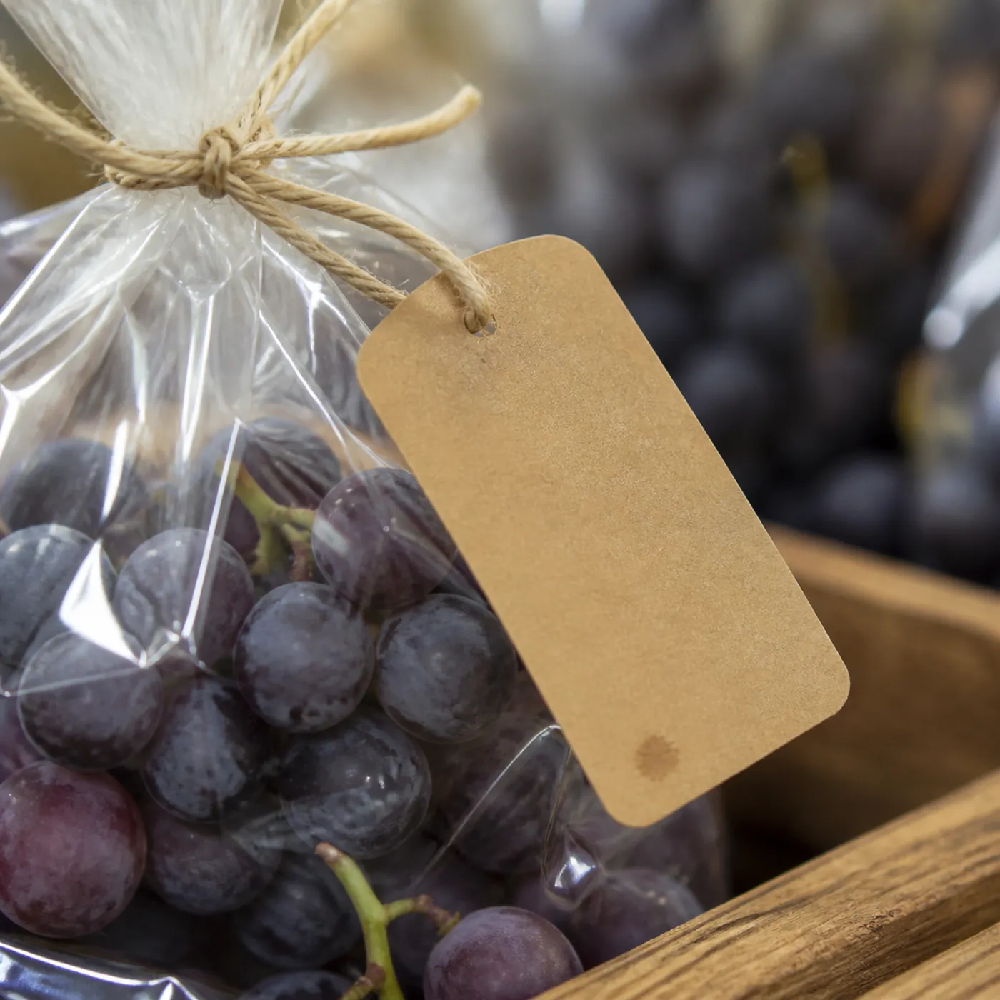

1901
1901년, 신부님이 심은 나무
안성 포도의 시작에는 사람 이름이 하나 붙어 있다.
글 안성마춤 웹진 편집부 · 사진 안성마춤 웹진 편집부
1901년, 공베르 신부가 프랑스에서 포도 묘목을 가져와 안성에 심었다. 성당 마당에서 시작된 몇 그루가 백 년을 넘겨 지역을 대표하는 농산물이 됐다.
이런 이야기를 들으면 보통 “역사가 깊다”에서 멈추게 된다. 그런데 밭에 가 보면 그게 전부가 아니라는 걸 알게 된다. 백 년 동안 품종이 바뀌었고, 재배 방식이 바뀌었고, 지금도 농가마다 다른 선택을 하고 있다.
안성 포도의 진짜 이야기는 과거형이 아니라 현재진행형이다.

LOOK CLOSER
알아두면 다르게 보입니다
매대에서 봉지를 집어 들기 전에, 세 가지만 알고 가면 같은 송이가 다르게 보인다.
01 · 품종
품종이 몇 가지나 되나요?
캠벨얼리, 거봉, 샤인머스캣이 대표적입니다. 캠벨은 껍질을 벗겨 먹는 재래 품종으로 신맛과 단맛이 함께 있고, 거봉은 알이 크고 과육이 부드럽습니다. 샤인머스캣은 껍질째 먹는 청포도로 씨가 없고 단맛이 강합니다. 같은 안성산이어도 이 셋은 다른 과일이라고 봐도 됩니다.

02 · 봉지
송이에 씌운 봉지는 왜 있나요?
병해충과 비바람에서 알을 보호하고, 껍질에 얼룩이 지는 걸 막기 위해서입니다. 언제 씌우고 언제 벗기는지가 색과 당도에 영향을 주기 때문에 농가마다 시점이 조금씩 다릅니다.

03 · 과분
껍질에 하얗게 묻은 건 뭔가요?
과분(果粉)입니다. 포도가 스스로 만들어내는 천연 보호막으로 수분 증발과 병균 침입을 막습니다. 잘 묻어 있을수록 신선하다는 신호이니, 먹기 직전까지 씻지 않는 편이 낫습니다.

HARVEST
언제가 가장 맛있냐고 묻는다면
포도는 겉빛만으로 맛을 알 수 없다.
농가는 품종의 특성과 송이 상태, 알의 색과 향, 그해 날씨와 재배 기록을 함께 보고 수확 시점을 정한다. 같은 밭에서도 골에 따라 며칠씩 차이가 난다.
그러니 “지금이 절정”이라는 말은 누구도 대신 해 줄 수 없다. 그해 그 밭에 서 있는 사람만 안다. 매대에서 만나는 봉지 하나하나가 각자의 달력을 갖고 있는 셈이다.

BUYING GUIDE
살 때 확인할 5가지
- 품종
같은 안성산이어도 품종에 따라 맛과 식감이 다르다
- 생산자명
이름이 붙은 포도를 고르는 게 가장 구체적인 선택이다
- 날짜
수확일 또는 포장일
- 보관 방법
품종과 포장에 따라 다르다. 파는 분께 여쭤보는 게 가장 빠르다
- 눈으로 볼 것
알을 누르지 말고, 포장 상태와 줄기의 마름 정도, 터진 알이 있는지를 본다

AFTER SHOPPING
사 온 다음에는
사 오자마자 터지거나 무른 알부터 골라낸다. 하나가 무르면 옆 알이 따라간다.
바로 먹지 않을 분량은 씻지 말고 그대로 보관한다. 과분이 보호막 역할을 하기 때문이다. 먹기 직전에 필요한 만큼만 씻는다.
NEXT · 2026.09
9월호 예고 — 밭에 다녀오겠습니다
“그 밭에 서 있는 사람만 안다.”
이 문장을 쓰고 나니 밭에 가보지 않고는 다음 이야기를 할 수 없겠다는 생각이 들었다.
9월호에서 안성의 포도 농가를 찾아간다. 백 년 동안 무엇이 바뀌었는지, 한 송이가 익는 데 무엇이 필요한지 — 직접 보고 오겠다.
9월 18일부터 20일까지는 안성맞춤포도축제가 열린다.